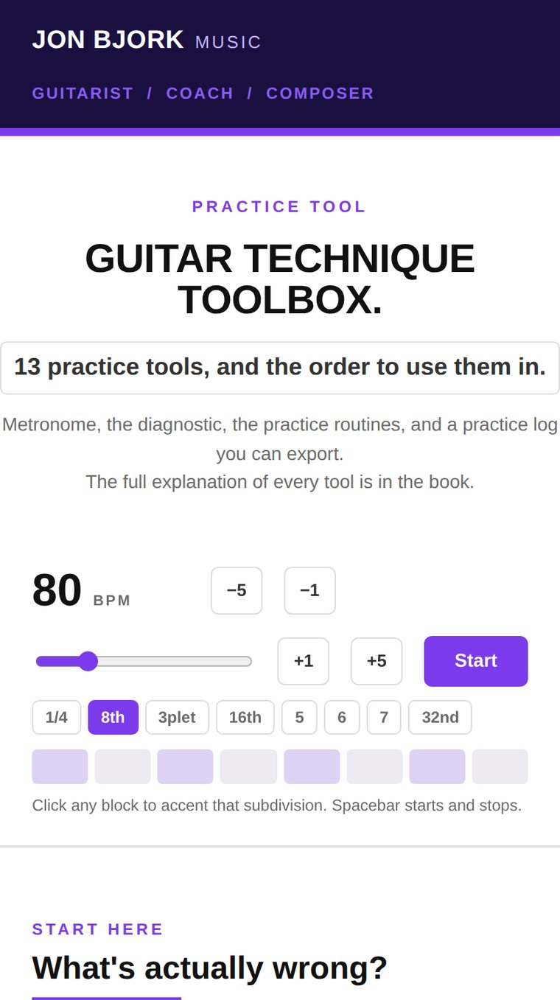
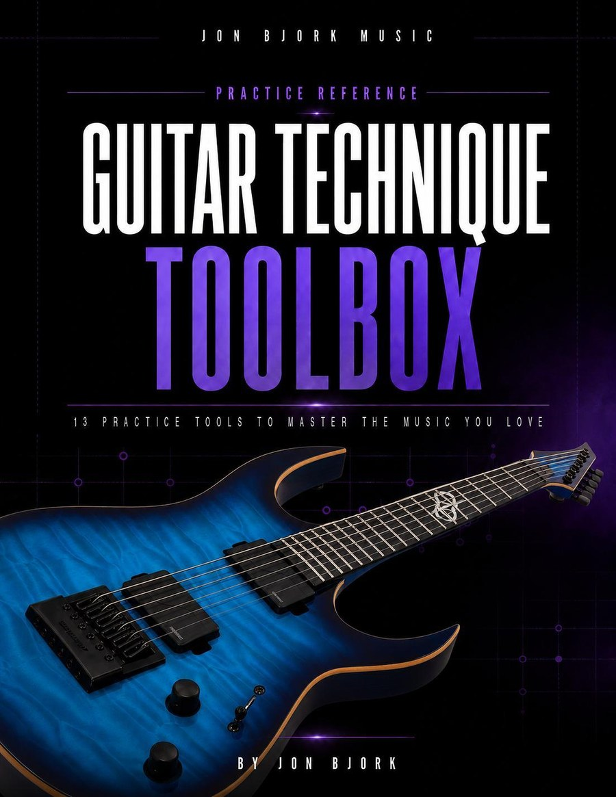

Learn The Music
You Love Faster.
Most of a hard phrase is already fine. Two or three notes are stopping you. This is the system for finding them, fixing them, and knowing when they are actually fixed.
54 Pages · 13 Tools · The Diagnostic · Practice Labs · Notation · Browser Tool
$27 once. Instant download, yours to keep and print.
Get The Toolbox $27 · instant download · pdf
You Know How This Goes.
You sit down with the phrase. You play it from the top. It falls apart in the same place it always does. You play it again from the top.
Forty minutes later you have played the easy bars about sixty times and the hard part about sixty times, and the hard part is exactly as hard as it was when you started.
The problem is rarely the exercises. Most players who have been at this a while already know about slow practice, accents, bursts and rhythmic variation. What nobody hands you is a way to work out what is actually wrong, which tool addresses that particular fault, what order the tools go in, and how to tell when the thing is genuinely fixed.
That is what this is.
General Technique Gets You 80% Of The Way.
Practising your general technique daily matters. Scales, arpeggios, the fundamentals. The most famous virtuosos on every instrument still do it every day, and so do I. None of that is wasted.
But there comes a point in a particular solo, or a particular piece, where being able to play a scale fast will not cut it. You cannot systematically practise everything that might come up in real music. There is too much of it.
Your general practice covers about 80% of what you will meet. For the last 20%, you need a different set of tools.
That is why I made this. Thirteen tools for the solo that has eluded you for the last few years.
Ten Notes Are Stopping You.
It will not do you much good to practise the part you can already play.
Take the phrase you have been stuck on. Walk Beat to Beat through it: one beat at a time plus the first note of the next, starting from every note in turn, at 80% of your target tempo.
Two or three short stretches will be dramatically harder than everything around them. Those are your weak links. They usually add up to about ten notes, and they have been the reason the whole phrase is stuck, the entire time.
Two of the groups from one eight-note run. Same notes, different entry point, and the second one starts on an upstroke. That is the sort of thing that has been quietly breaking the phrase.
Now the problem is small enough to actually solve, and the book tells you which tool solves it.
Four Questions, Every Time You Hit A Wall.
The tools are the easy part. Knowing which one to reach for is the part that has been missing.
What is actually wrong with this phrase?
Which tool fixes that?
What order do the tools go in?
How do I know it worked?
Five Stages, And Speed Comes Fourth.
Most players start at stage four. That is why a week of hard practice so often produces nothing.
Diagnose
Find the weak link before you spend a minute on it.
Program
Build the movement correctly and slowly.
Stress-test
Attack it from angles that expose what is still weak.
Accelerate
Only now do you push the tempo.
Make it music
Put the dynamics and the phrasing back.
Thirteen Tools.
Each one gets its concept pages and a practice lab of its own. Every tool tells you when to use it, what to watch for, which tools to pair it with, how to tell you have got it, and how to retest the real phrase afterwards.
54 Pages, And None Of Them Are Filler.
The diagnostic
Eight symptoms in plain language, from "I can play it slowly but it falls apart when I speed up" to "it is clean and up to tempo but it sounds mechanical". Each one maps to an ordered sequence of tools.
Two practice labs per tool
One to learn what the tool feels like, run once on a neutral pattern. One to use on your own music, every session. No guessing what to do with the next five minutes.
A "you've got it when" line for every tool
So you can tell the difference between doing an exercise and doing it correctly.
A worked week
One phrase carried from unplayable to playable across seven days, with what actually happened on each one.
A 30-minute session plan
Pick the phrase, map it, work the worst weak link, put it back in context, and only then push tempo.
Troubleshooting
The eight things that go wrong most often, including the one nobody warns you about: fixing a passage so thoroughly in isolation that it falls apart the moment you put it back in the song.
Tab and notation throughout
Every method is drawn, not just described. Five full notation sheets plus tab cards on the tool pages, so you can see exactly what a loop, an accent shift or a burst ladder looks like.
A cheat sheet, a glossary and a practice log
The whole toolbox on one page for the music stand, the vocabulary defined rather than assumed, and a log sheet you can reprint as often as you like.
And A Version For The Music Stand.
The book is for reading. This is for the two minutes when you are holding a guitar and need one thing, fast. It opens in any browser on your phone, tablet or laptop.
- The diagnostic, tap your symptom and get the tool order
- All thirteen tools, just the part you need at the guitar
- A metronome built in, so that is one less app
- A practice log that saves in your browser, with export and backup

You have been playing a while. You practise regularly, you have plenty of material, and you put the hours in. What is missing is a way to tell where those hours should go. If you have ever finished a session with no idea whether it accomplished anything, this was written for you.
Beginners still learning chords and basic fretboard geography. Everything here assumes you can read tab, use a metronome, and play the phrase slowly before you try to play it fast.
About The Author.
I have been playing since 1992 and studied at the Guitar Institute of Technology in Los Angeles, learning from musicians like Brett Garsed and T.J. Helmerich. I have taught full-time since 2001, which over more than 25 years has come to over a thousand students. Watching the same problems appear in front of you a few hundred times teaches you which methods survive contact with a real player and which ones only sound good.
Alongside the teaching I compose orchestral music, nearly 700 tracks for Epidemic Sound, heard on channels like MrBeast and Hot Ones.
I did not invent any of these tools. I collected them over a long time from lessons, from classical and flamenco practice, from experimenting, and from teaching. I threw out everything that did not work and kept these. They are the ones I still use every day.
Already Thinking About The Practice Room?
The toolbox is in there, in its own space in the classroom, and in Practice Room Pro too. If you were planning to join anyway, join instead and skip this page.
See The Practice Room →Questions.
Is this just a written version of a lesson I can find free?
No. The thirteen tools are widely known and you have probably met several of them already. What you will not find laid out anywhere is the diagnostic that tells you which one your phrase needs, the order they go in, and how to tell when a problem is actually solved. That sequencing is the book.
What do I need to use it?
A guitar, a metronome and one phrase you are stuck on. The book stands on its own, with notation, a glossary and success criteria for every tool.
What level is this for?
Intermediate upward. If you can play a phrase slowly and cleanly but cannot get it up to tempo, you are exactly the right reader.
Is it printable?
Yes, and it is designed to be. US Letter, black text on white, at 300 dpi, with a practice log meant to be reprinted.
Do I need to be online to use the browser tool?
Only to open it the first time. Your practice log is saved in your own browser, and you can export it as a file whenever you want a backup.
Something is wrong with my download.
Email me and I will sort it out. If the file will not open, or you bought it twice by accident, that is on me to fix.
I'm already in The Practice Room. Do I need to buy this?
No. It is in the classroom in its own space, and it is included in Practice Room Pro too. Nothing to buy.

Work On The Ten Notes
That Are Stopping You.
54 pages, thirteen tools, the diagnostic that tells you which one to use, and the browser version for the music stand.
$27 once. Instant download, yours to keep and print.
Get The Toolbox $27 · instant download · pdf